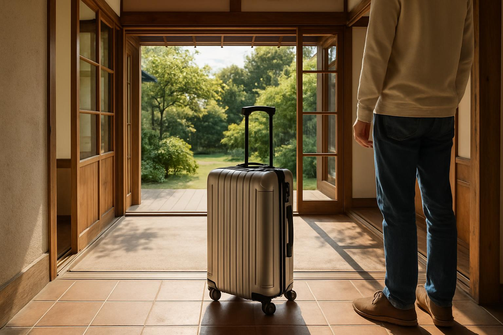

← コラム一覧に戻る

観光客に向けて空き家を宿泊施設として活用するオーナー様も増えています
「賃貸に出すほどではないけど、観光客向けに貸してみたい」――鹿児島でも、空き家を民泊（住宅宿泊事業）として活用する動きが広がっています。この記事では、民泊活用の仕組みと、開業までに知っておきたい許可・費用・注意点を解説します。
民泊（住宅宿泊事業）とは
民泊とは、住宅宿泊事業法（通称：民泊新法）に基づき、住宅を宿泊施設として有償で貸し出す事業のことです。旅館業法上の「簡易宿所」とは異なり、年間提供日数が180日以内という制限がある代わりに、比較的手続きが簡易とされています。
180日を超えて通年で運営したい場合は、旅館業法の許可（簡易宿所営業など）を取得する必要があり、こちらは消防設備や構造基準がより厳しくなります。
民泊運用の主なパターン
| 運用形態 | 特徴 |
|---|---|
| 家主居住型 | オーナーが同じ建物に住みながら一部を貸し出す |
| 家主不在型 | 空き家をまるごと貸し出す（管理業者への委託が必須） |
| 自主運営 | 予約対応・清掃・鍵の受け渡しを自分で行う |
| 運営代行 | 専門の運営代行会社に業務を委託する |
空き家の活用としては「家主不在型＋運営代行」の組み合わせが現実的です。家主不在型の場合、法律上「住宅宿泊管理業者」への委託が義務付けられている点も押さえておきましょう。
開業までの流れと必要な手続き
民泊を始めるには、都道府県（鹿児島県の場合は県または鹿児島市の担当窓口）への届出が必要です。主な準備事項は以下の通りです。
📋 民泊開業までの主な準備
- 住宅宿泊事業の届出（都道府県・保健所を管轄する自治体へ）
- 消防法令適合通知書の取得（消防署への確認・消防設備の追加投資が必要な場合あり）
- 住宅宿泊管理業者との契約（家主不在型の場合）
- 近隣住民への説明・周知（自治体によっては義務化されている場合も）
民泊 vs 賃貸リノベーションの比較
| 比較項目 | 民泊 | 賃貸リノベーション |
|---|---|---|
| 収益性 | 稼働率次第で高収益も | 安定的だが上限あり |
| 初期費用 | 家具・消防設備等が必要 | 内装リフォームが中心 |
| 手間 | 清掃・対応が継続的に発生 | 入居後は比較的少ない |
| 向いている物件 | 観光地・駅近など立地が良い物件 | 幅広い立地で対応可 |
民泊活用の注意点
民泊は収益性が魅力ですが、近隣トラブルのリスクには注意が必要です。ゴミ出しのマナー、深夜の騒音、駐車場の使い方など、宿泊者への案内を徹底しないと近隣からの苦情につながります。
近隣への事前説明を怠ると、行政への苦情や届出の取り下げにつながるケースもあります。運営代行会社を活用する場合も、近隣対応の体制を事前に確認しておきましょう。
また、180日という日数制限があるため、収益シミュレーションを事前にしっかり行うことが重要です。観光需要が集中する時期（大型連休・お盆など）に稼働を集中させる工夫も検討しましょう。
TAMARIEでは、民泊活用に向いている物件かどうかの診断や、運営代行会社・リノベーション業者のご紹介にも対応しています。「うちの空き家は民泊に向いているか知りたい」というご相談も歓迎です。